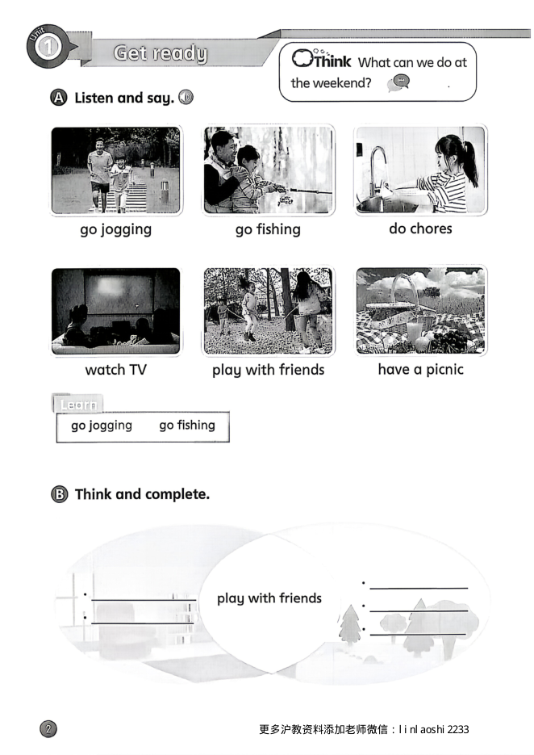
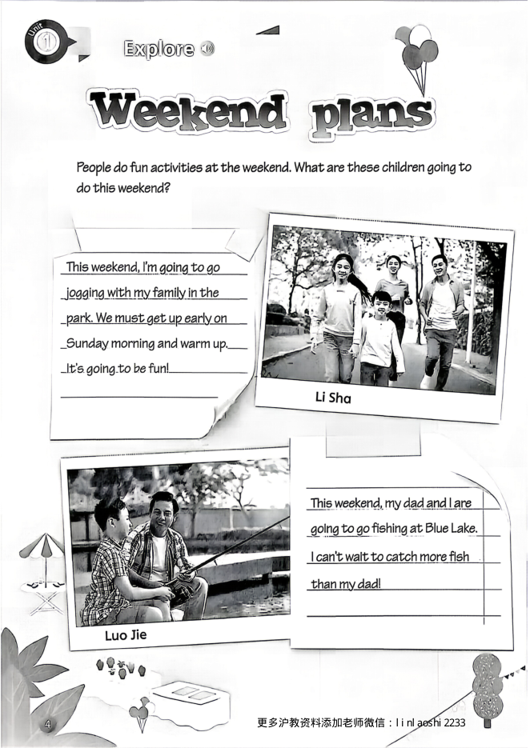
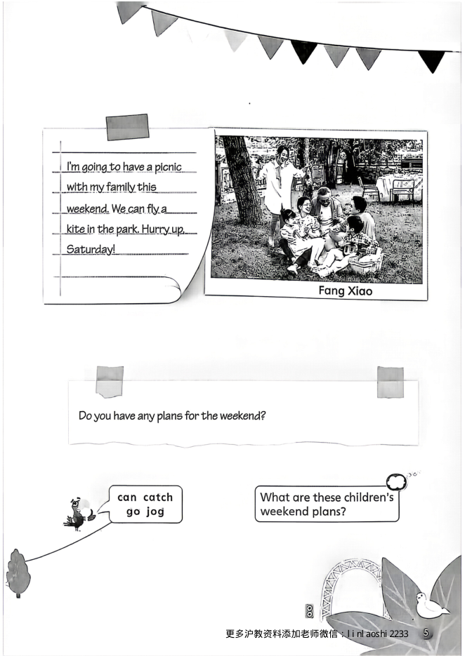
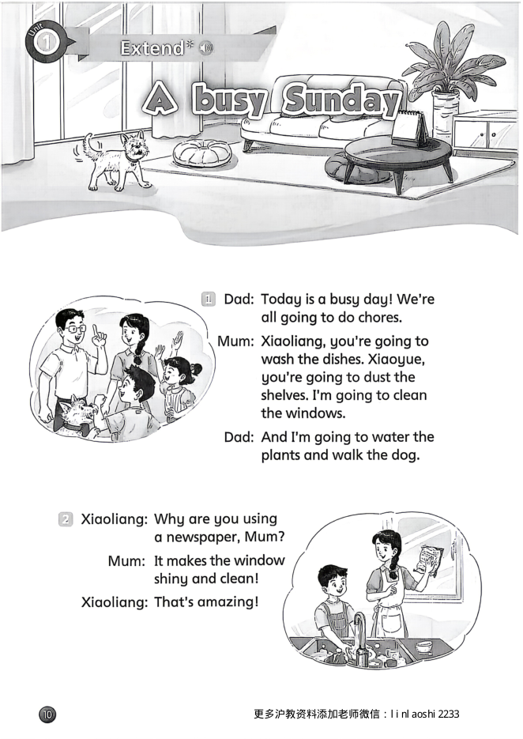
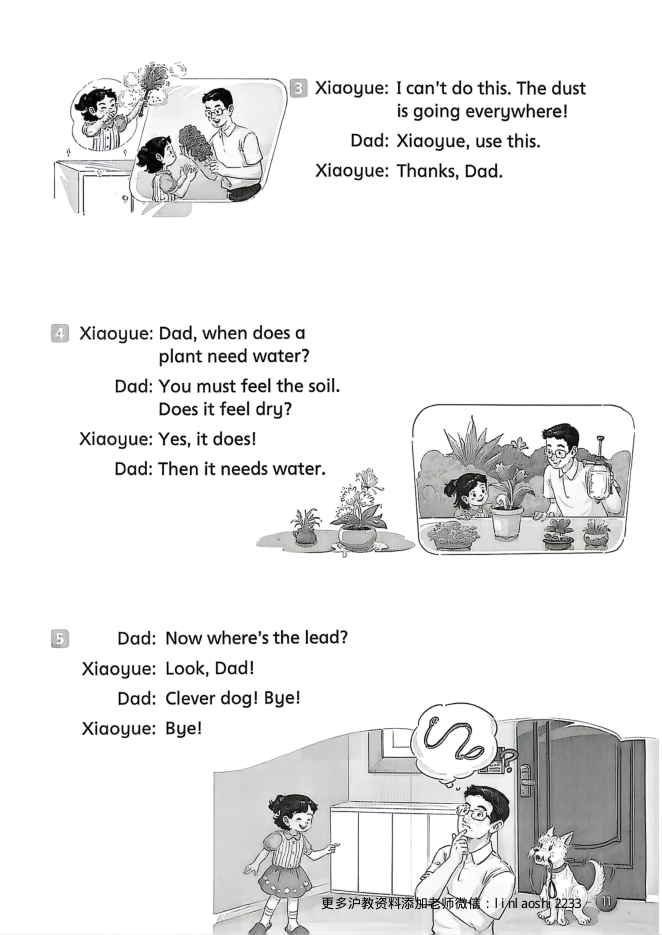

Get ready 热身准备

点一下书页上的句子，就能听到这一句的发音
课文 Explore 主课文朗读


点一下书页上的句子，就能听到这一句的发音
拓展 Extend 拓展阅读朗读


点一下书页上的句子，就能听到这一句的发音
单词 Words 点单词听发音
Go jogging.
Go fishing.
Do chores.
Watch TV.
Play with friends.
Have a picnic.
Busy.
Weekend.
Plan.
Early.
Catch.
Any.
Robot.
Sock.
Sweep.
Warm up.
More than.